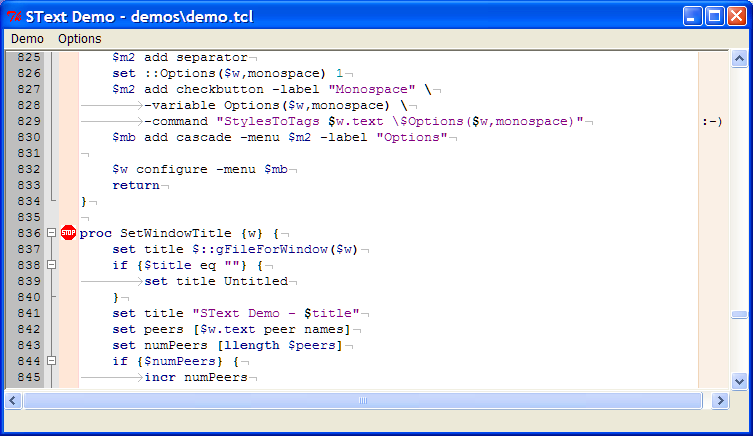

TkTextPlus
What is TkTextPlus?
TkTextPlus is an extended Tk Text widget
with features
suitable
for source-code displaying and editing. Features include displaying
line numbers, syntax highlighting, code folding and linemarkers.

Development Status
TkTextPlus is in the early stages of development. The underlying Tk 8.5
text
widget itself still has some issues which make it not ready for daily
use (issues with -startline and -endline). This webpage serves as the
only (partial) documentation of the API, which is subject to change.
New Widget Options
-edgecolumn
-linenumbers
-showeol
-showtabs
-tabwidth
-whitespaceforeground
New Widget Commands
pathName identify x y
pathName linefoldable index
pathName linefolded index ?boolean?
pathName linefoldhighlight ?index?
pathName linefoldlevel index
pathName linevisible index ?boolean?
pathName togglecontraction index
Margins
A TkTextPlus widget can display up to 6 margins on the left and right
sides
of
the window. One margin is for displaying line numbers, one for
code-folding indicators, and the remaining 4 margins are for displaying
linemarkers. The margins are predefined (you can't create new ones) and
are named number,
fold, marker1, marker2, marker3 and marker4 respectively.
-activebackground
-activeforeground
-activeline
-background
-foreground
-justify
-leftedge
-padx
-rightedge
-side
-visible
-width
pathName
margin cget name option
pathName margin configure name ?option? ?value? ?option
value ...?
pathName margin names
pathName margin order ?list?
Line Markers
A linemarker is a graphical or textual annotation to a line. Each line
of text may have up to 4 linemarkers associated with it, one in each of
the 4 margins used for displaying linemarkers. A linemarker could be
used to display an icon representing a debugger breakpoint in a source
file for example.
-bitmap
-image
-text
pathName
linemarker cget
name option
pathName linemarker configure
margin ?option? ?value?
?option value ...?
pathName linemarker create name ?option value ...?
pathName linemarker delete name
pathName linemarker names
pathName linemarker set line ?margin? ?name?
Lexers
A lexer is used to scan the text being displayed and allows
language-specific syntax highlighting and folding. A lexer may for
example identify comments, keywords, operators and strings and
associate style information with the relevant pieces of text. The
appearance of the different styles is controlled using the familar text
widget tags, allowing you to specify the foreground and background
colors, font etc of each style individually using the tag configure
command.
Currently there are 6 lexers provided, named bash, cpp, lua, makefile, python and tcl. The lexing
logic (and code ;-} ) is based on the popular Scintilla editing
component. It should be fairly easy to add new languages but there is
no stable API for doing so.
Once a lexer is assigned to a text widget (using the lexer set command)
the lexer will spring into action whenever text is inserted or deleted.
The lexer invoke
command is provided to test the performace of the lexer. On my
machine for example lexer
invoke takes ~54000 microseconds with the cpp lexer to parse
all 9760 lines of tkTextDisp.c.
-bracestyle
-enable
pathName
lexer bracematch
index
pathName lexer cget name option
pathName lexer configure ?option? ?value? ?option value
...?
pathName lexer
invoke ?start?
end?
pathName lexer keywords index ?list?
pathName lexer names
pathName lexer set ?name?
pathName lexer styleat index
pathName lexer stylenames
Lexers & Tags
When a lexer is assigned with the lexer
set
command, one tag is created for each of the predefined lexer styles.
The tag names are the same as the lexer style names as returned by the lexer stylenames
command. Rather than applying tags using the tag add command, a
lexer records a byte of style information with each byte of text. This
method results in a considerable performance
gain and memory savings over the tags being applied in the usual
manner; it also limits the number of possible lexer styles to 255, but
that
shouldn't be a concern.
You can still add any number of other tags using tag add. The tag names
command will return the names of any tags including those created by a
lexer. Furthermore, bindings on lexer tags will work. However, the tag ranges command
will not
return the names of tags a lexer itself has applied to the text.
Tags created by a lexer may not be deleted using tag delete; attempts
to do so are silently ignored.
License
TkTextPlus is available under the standard Tcl license. Parts of it are
distributed with the following additional copyright (from Scintilla):
Copyright 1998-2003 by Neil Hodgson <neilh@scintilla.org>
All Rights Reserved
Permission to use, copy, modify, and distribute this software and its
documentation for any purpose and without fee is hereby granted,
provided that the above copyright notice appear in all copies and that
both that copyright notice and this permission notice appear in
supporting documentation."
Download
https://sourceforge.net/projects/tktextplus/
https://sourceforge.net/project/showfiles.php?group_id=188485

Last modified February 8
2007